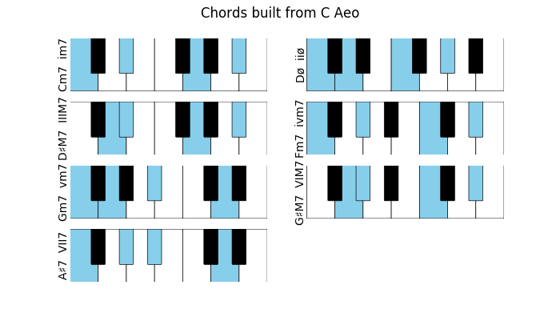
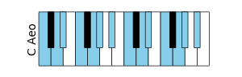

| Notes |
Scale(‘C’).notes() |
[C, D, E, F, G, A, B] |
|---|
| Transposition |
(Scale(‘C’)+3).notes() |
[D♯, F, G, G♯, A♯, C, D] |
|---|
| Comparison |
Scale(‘C’)== Scale(‘D’) |
False |
|---|
| Diatonic Chords |
Scale(‘C’).chords() |
[CM7, Dm7, Em7…] |
|---|
| Roman Notation |
Scale(‘C’).chordsRoman() |
[‘IM7’, ‘iim7’, ‘iiim7’…] |
|---|
| Degrees Quality |
Scale(‘C’).degreesQuality() |
[‘maj’, ‘min’, ‘min’…] |
|---|
| Check if a chord is diatonic |
Scale(‘C’).hasChord(‘Cm’) |
False, or degree if in scale |
|---|
| Intervals |
Scale(‘C’).intervals() |
[2, 2, 1, 2, 2, 2, 1] in semitones |
|---|
| Intervals (strings) |
Scale(‘C’).intervals(asStr=True) |
‘w-w-h-w-w-w-h’ |
|---|
| Parallel minor |
Scale(‘C’).parallelMinor() |
C Aeo | C D D♯ F G G♯ A♯ |
|---|
| Parallel modes |
Scale(‘C’).parallelModes() |
[C Dor, C Phr, C Lyd…] |
|---|
| RelativeMinor |
Scale(‘C’).relativeMinor() |
A Aeo | A B C D E F G |
|---|
| RelativeMajor |
Scale(‘C Aeo’).relativeMajor() |
D♯ Ion | D♯ F G G♯ A♯ C D |
|---|
| Plotting scale chords |
Scale(‘C min’).plotChords() |

|
|---|
| RelativeModes |
Scale(‘C’).relativeModes() |
[D Dor, E Phr, F Lyd…] |
|---|
| Plotting a chord |
Scale(‘C min’).plot() |

|
|---|
{kind=link}
{kind=link}